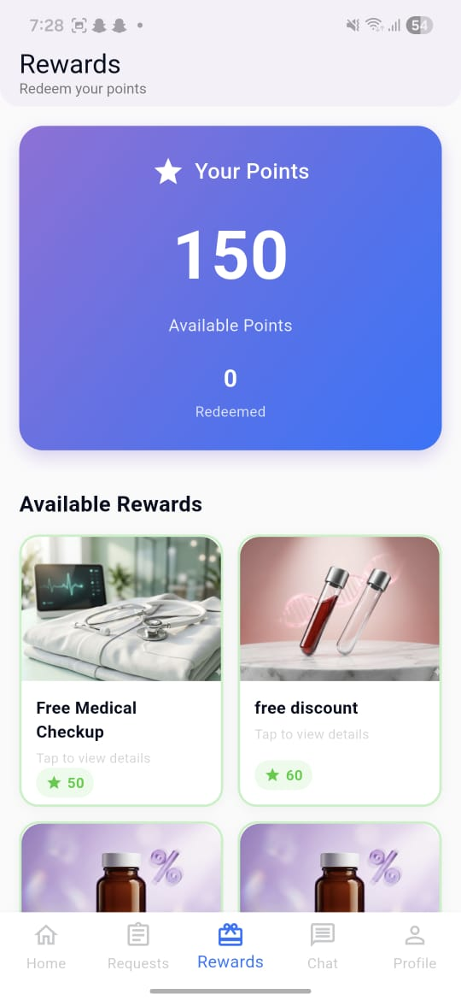

About the Project
Many hospitals suffer from frequent blood shortages, especially during emergencies. Hospitals rely on manual systems to track inventory, there is no centralized donor database, and finding the right donor at the right time is extremely difficult.
This platform introduces a smart digital system connecting blood donors, hospitals, and blood seekers through a Flutter mobile app. The system digitizes the entire blood donation workflow with AI-driven matching, real-time alerts, and QR-based verification.
The platform creates a Win–Win–Win ecosystem: faster access to verified donors for seekers, a reward system for donors, and real-time inventory analytics for hospitals.
Blood shortages, slow emergency response, no centralized donor system — leading to delays in treatment and loss of lives.
A smart Flutter app with AI matching, QR verification, and real-time emergency notifications to connect the right people instantly.
Reduced emergency response time, organized blood supply, real-time analytics, and a reward system to build a donation culture.
App Screenshots
.jpeg)
